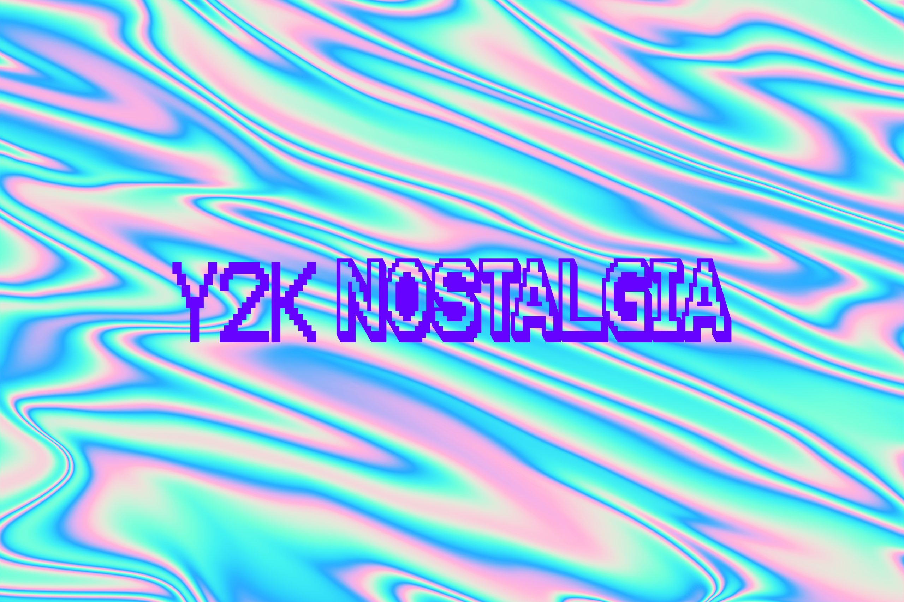

About Y2K Nostalgia
Y2K nostalgia refers to a longing or fondness for the cultural elements, technology, and trends that were prominent around the time of the year 2000, particularly as the new millennium approached.

One aspect of Y2K nostalgia is pop culture. Y2K nostalgia often involves a resurgence of interest in pop culture phenomena from the era, including boy bands like *NSYNC and the Backstreet Boys, teen movies like "Clueless" and "American Pie," and TV shows like "Friends" and "Buffy the Vampire Slayer." More aspects of Y2K nostalgia:
Fashion
The fashion trends of the late 90s and early 2000s were baggy jeans, denim, cargo pants, crop tops, platform shoes, tracksuits, and leather. These pieces evoke a huge sense of nostalgia for many who grew up then.
FashionMusic
The music of the late 90s and early 2000s, ranging from pop, hip-hop, r&b, and to alternative rock etc. holds a very special place in the hearts of those of us who grew up during that time of quality music.
MusicTechnology
Nostalgia for gadgets and electronics from the late 90s and early 2000s, such as flip phones, dial-up internet, bulky CRT monitors, and early video game consoles like the Nintendo 64 and PlayStation.
TechnologyOverall, the Y2K aesthetic celebrates the eclectic and vibrant visual culture of the late 90s and early 2000s, offering a nostalgic journey back to a time of optimism, experimentation, and technological innovation.